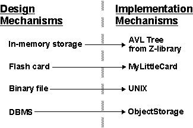
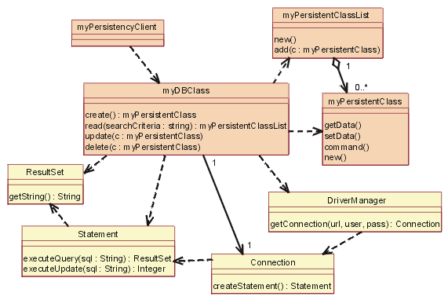
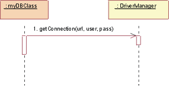
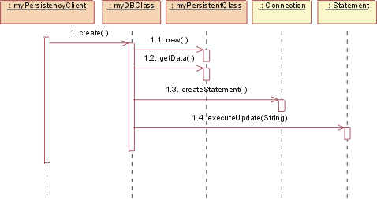
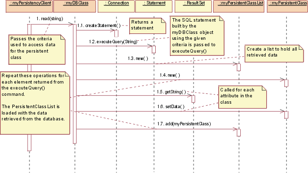
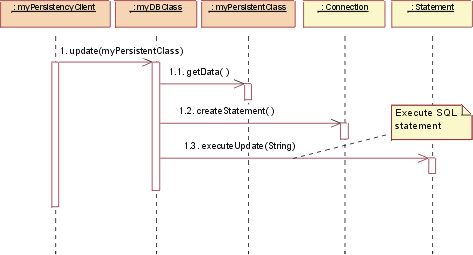
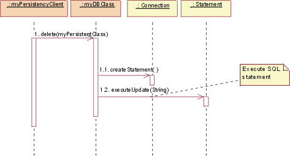

| Concept: Design and Implementation Mechanisms |
 |
|
| Related Elements |
|---|
Introduction to Design and Implementation MechanismsA design mechanism is a refinement of a corresponding analysis mechanism (see also Concept: Analysis Mechanisms). A design mechanism adds concrete detail to the conceptual analysis mechanism, but stops short of requiring particular technology - for example, a particular vendor's implementation of, say, an object-oriented database management system. As with analysis mechanisms, a design mechanism may instantiate one or more patterns, in this case architectural or design patterns. Similarly, an implementation mechanism is a refinement of a corresponding design mechanism, using, for example, a particular programming language and other implementation technology (such as a particular vendor's middleware product). An implementation mechanism may instantiate one or more idioms or implementation patterns. Example: Characteristics of Design MechanismsConsider the analysis mechanism for Persistency:
These objects will require different support for persistency; the following characteristics of design mechanisms for persistency support might be identified:
Note that these speeds are only rated 'slow' relative to in-memory storage. Obviously, in some environments, the use of caching can improve apparent access times.
Refining the Mapping between Design and Implementation MechanismsInitially, the mapping between design mechanisms and implementation mechanisms is likely to be less than optimal but it will get the project running, identify yet-unseen risks, and trigger further investigations and evaluations. As the project continues and gains more knowledge, the mapping needs to be refined. Proceed iteratively to refine the mapping between design and implementation mechanisms, eliminating redundant paths, working both "top-down" and "bottom-up." Working Top-Down. When working "top-down," new and refined use-case realizations will put new requirements on the needed design mechanisms via the analysis mechanisms needed. Such new requirements might uncover additional characteristics of a design mechanism, forcing a split between mechanisms. There is also a compromise between the system's complexity and its performance:
Working Bottom-Up. When working "bottom-up," investigating the available implementation mechanisms, you might find products that satisfy several design mechanisms at once, but force some adaptation or repartitioning of your design mechanisms. You want to minimize the number of implementation mechanisms you use, but too few of them can also lead to performance issues. Once you decide to use a DBMS to store objects of class A, you might be tempted to use it to store all objects in the system. This could prove very inefficient, or very cumbersome. Not all objects which require persistency need to be stored in the DBMS. Some objects may be persistent but may be frequently accessed by the application, and only infrequently accessed by other applications. A hybrid strategy in which the object is read from the DBMS into memory and periodically synchronized may be the best approach. Example A flight can be stored in memory for fast access, and in a DBMS for long term persistency; this however triggers a need for a mechanism to synchronize both. It is not uncommon to have more than one design mechanisms associated with a client class as a compromise between different characteristics. Because implementation mechanisms often come in bundles in off-the-shelf components (operating systems and middleware products) some optimization based on cost, or impedance mismatch, or uniformity of style needs to occur. Also, mechanisms often are inter-dependent, making clear separation of services into design mechanisms difficult. Examples
Refinement continues over the whole elaboration phase, and is always a compromise between:
The overall goal is always to have a simple clean set of mechanisms that give conceptual integrity, simplicity and elegance to a large system. Example: Mapping Design Mechanisms to Implementation MechanismsThe Persistence design mechanisms can be mapped to implementation mechanisms as follows:
 A possible mapping between analysis mechanisms and design mechanisms. Dotted arrows mean "is specialized by," implying that the characteristics of the design mechanisms are inherited from the analysis mechanisms but that they will be specialized and refined. Once you have finished optimizing the mechanisms, the following mappings exist:
The map must be navigable in both directions, so that it is easy to determine client classes when changing implementation mechanisms. Describing Design Mechanisms
Design mechanisms, and details regarding their use, are documented in the As with analysis mechanisms, design mechanisms can be modeled using a collaboration, which may instantiate one or more architectural or design patterns. Example: A Persistency MechanismThis example uses an instance of a pattern for RDBMS-based persistency drawn from JDBC™ (Java Data Base Connectivity). Although we present the design here, JDBC does supply actual code for some of the classes, so it is a short step from what is presented here to an implementation mechanism. The figure Static View: JDBC shows the classes (strictly, the classifier roles) in the collaboration.
 Static View: JDBC The yellow-filled classes are the ones which were supplied, the others (myDBClass etc.) were bound by the designer to create the mechanism. In JDBC, a client will work with a DBClass to read and write persistent data. The DBClass is responsible for accessing the JDBC database using the DriverManager class. Once a database Connection is opened, the DBClass can then create SQL statements that will be sent to the underlying RDBMS and executed using the Statement class. The Statement class is what "talks" to the database. The result of the SQL query is returned in a ResultSet object. The DBClass class is responsible for making another class instance persistent. It understands the OO-to-RDBMS mapping and has the behavior to interface with the RDBMS. The DBClass flattens the object, writes it to the RDBMS and reads the object data from the RDBMS and builds the object. Every class that is persistent will have a corresponding DBClass. The PersistentClassList is used to return a set of persistent objects as a result of a database query (e.g., DBClass.read()). We now present a series of dynamic views, to show how the mechanism actually works.
 JDBC: Initialize Initialization must occur before any persistent class can be accessed. To initialize the connection to the database, the DBClass must load the appropriate driver by calling the DriverManager getConnection() operation with a URL, user, and password. The operation getConnection() attempts to establish a connection to the given database URL. The DriverManager attempts to select an appropriate driver from the set of registered JDBC drivers. Parameters: url: A database url of the form jdbc:subprotocol:subname. This URL is used to locate the actual database server and is not Web-related in this instance. user: The database user on whose behalf the Connection is being made pass: The user's password Returns: a Connection to the URL.
 JDBC: Create To create a new class, the persistency client asks the DBClass to create the new class. The DBClass creates a new instance of PersistentClass with default values. The DBClass then creates a new Statement using the Connection class createStatement() operation. The Statement is executed and the data is inserted into the database.
 JDBC: Read To read a persistent class, the persistency client asks the DBClass to read. The DBClass creates a new Statement using the Connection class createStatement() operation. The Statement is executed and the data is returned in a ResultSet object. The DBClass then creates a new instance of the PersistentClass and populates it with the retrieved data. The data is returned in a collection object, an instance of the PersistentClassList class. Note: The string passed to executeQuery() is not necessarily exactly the same string as the one passed into the read(). The DBClass will build the SQL query to retrieve the persistent data from the database, using the criteria passed into the read(). This is because we do not want the client of the DBClass to need the knowledge of the internals of the database to create a valid query. This knowledge is encapsulated within DBClass.
 JDBC: Update To update a class, the persistency client asks the DBClass to update. The DBClass retrieves the data from the given PersistentClass object, and creates a new Statement using the Connection class createStatement() operation. Once the Statement is built the update is executed and the database is updated with the new data from the class. Remember: It is the job of the DBClass to "flatten" the PersistentClass and write it to the database. That is why is must be retrieved from the given PersistentClass before creating the SQL Statement. Note: In the above mechanism, the PersistentClass must provide access routines for all persistent data so that DBClass can access them. This provides external access to certain persistent attributes that would have otherwise have been private. This is a price you have to pay to pull the persistence knowledge out of the class that encapsulates the data.
 JDBC: Delete To delete a class, the persistency client asks the DBClass to delete the PersistentClass. The DBClass creates a new Statement using the Connection class createStatement() operation. The Statement is executed and the data is removed from the database. In the implementation of this design, some decisions would be made about the mapping of DBClass to the persistent classes, e.g. having one DBClass per persistent class and allocating them to appropriate packages. These packages will have a dependency on the supplied java.sql (see JDBC™ API Documentation) package which contains the supporting classes DriverManager, Connection, Statement and ResultSet. |

© Copyright IBM Corp. 1987, 2006. All Rights Reserved. |